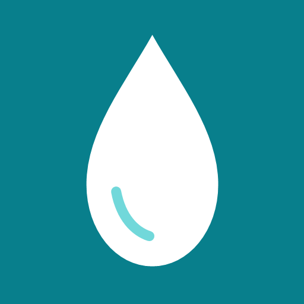

PWA & LOGISTICS · LIVE PRODUCTION
Clean water delivery,
streamlined flow.
AquaFlow — Water Refill & Station Operations PWA
A mobile-first Progressive Web App built for water refill stations and customers. Features multi-tenant station isolation, Firebase Firestore transactions, biometric WebAuthn passkey authentication, inventory monitoring, and live order dispatch.
01 — PRODUCTION PWA & BACKEND (VERCEL + FIREBASE)
INTERACTIVE REFILL & DISPATCH DEMO
Open Production App
Interactive PWA preview · Production live on Vercel

AquaFlow
Express Refill Service
VERCEL LIVE
SELECT CONTAINER TYPE:
Quantity:
2
Total Amount:
₱70.00
Ready to order
Cash on delivery · Standard refill queue
- 1Placed
- 2Station
- 3Rider
- 4Delivered